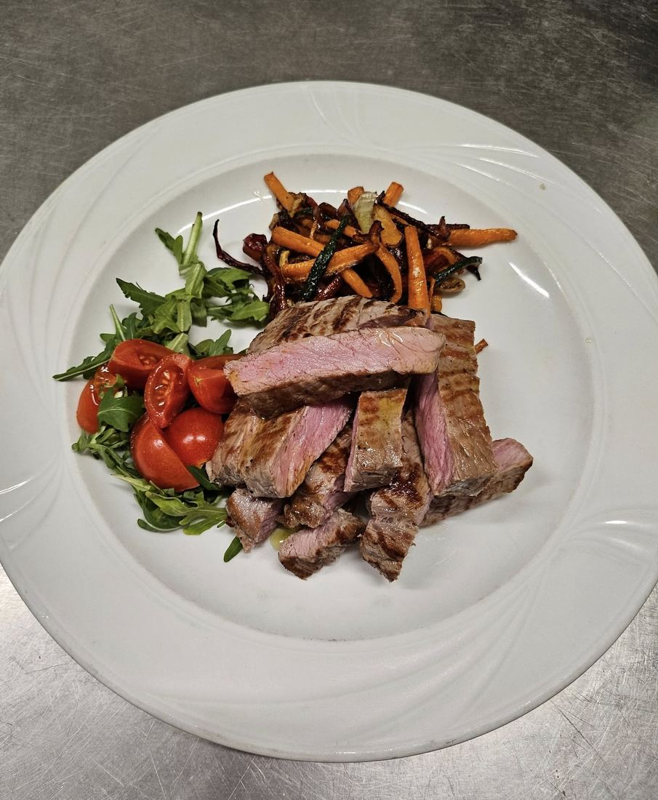
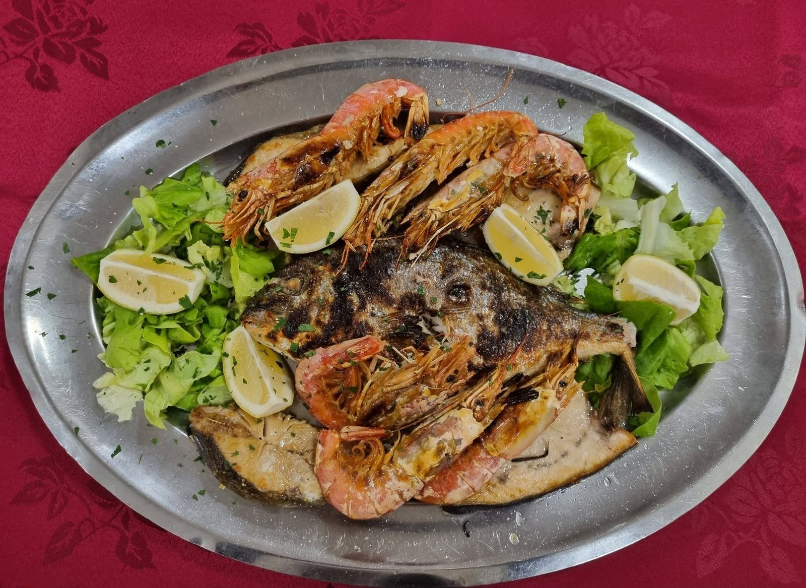
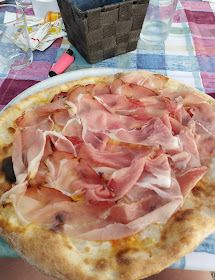
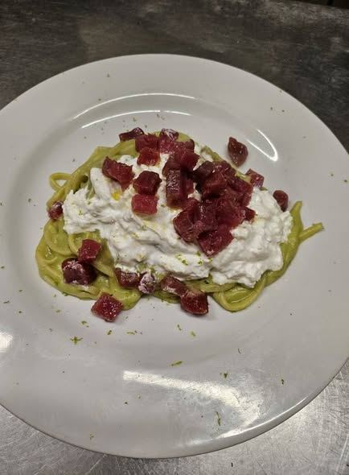

DALLA CUCINA
Una cucina
da scoprire.
Carne, pesce e piatti della casa: una selezione per continuare a guardare il menu anche con gli occhi.




DALLA CUCINA
Carne, pesce e piatti della casa: una selezione per continuare a guardare il menu anche con gli occhi.



